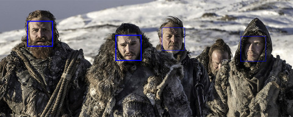
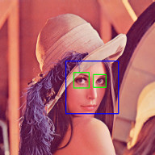
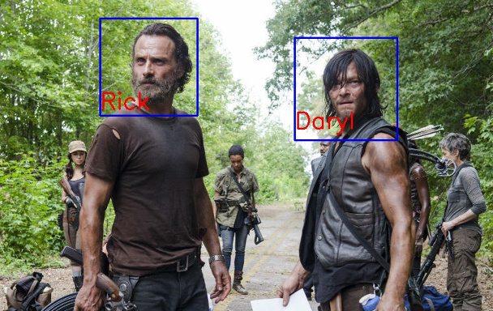
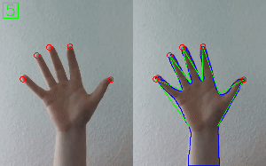
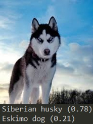
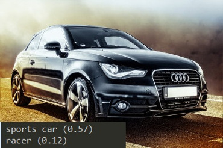
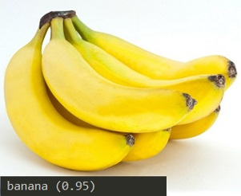
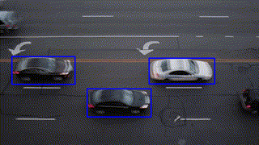
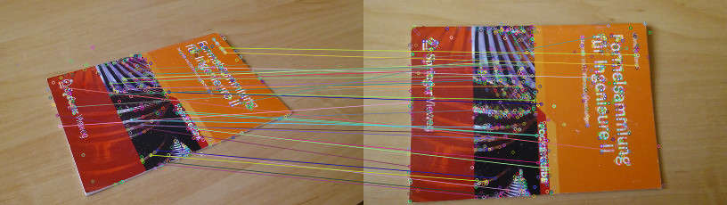
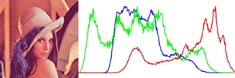

opencv4nodejs—在Nodejs中借OpenCV实现包括人脸识别，深度神经网络在内的机器学习的功能

发布于
这是一个为Nodejs实现的异步的OpenCV 3.X API,它包括了这些功能:人脸检测、机器学习、神经网络,手势识别、物体跟踪、特征匹配、图像直方图。
这个库的examples文件夹中包含了一些程序示例。
人脸检测

人脸识别

手势识别

用深度神经网络进行物体识别



机器学习包括手写文字学习
物体追踪

特征点检测与匹配

以及图像的直方图

安装方式：
$ npm install --save opencv4nodejs
同时要确保你电脑里已经安装了OpenCV 3+版本程序。
安装完OpenCV，记得设置环境变量：
OPENCV_DIR 指向包含include目录的那个目录 或者显式地设置OPENCV_INCLUDE_DIR .
OPENCV_LIB_DIR 指向OpenCV中包含.lib或者.so文件的目录.
github地址：
https://github.com/justadudewhohacks/opencv4nodejs
可以根据示例代码进行使用。
评论
或 匿名发表评论